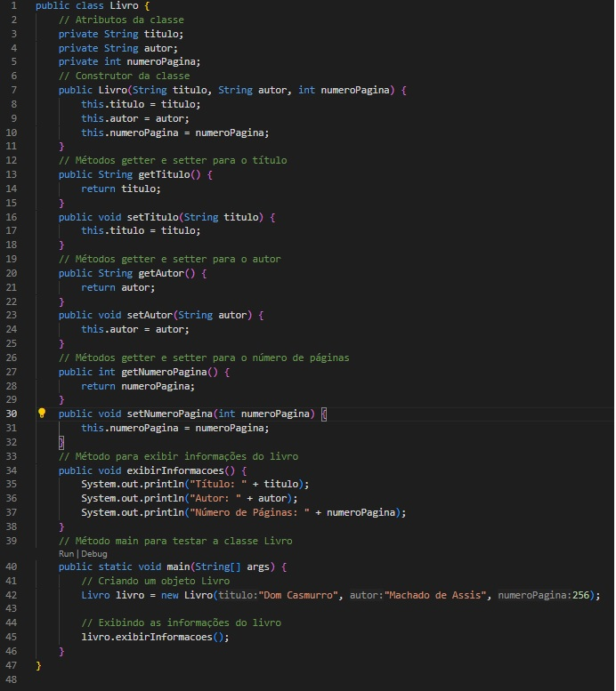

1 Exercício Avaliativo
1.1 Questão 1
1.1.1 Conceito de Encapsulamento e Information Hiding
Encapsulamento refere-se à prática de agrupar dados e métodos que operam sobre esses dados em uma única unidade, geralmente uma classe. Isso permite que a implementação interna de uma classe seja escondida do resto do código, expondo apenas uma interface pública para interação. Tendo como
Information Hiding: chamado de Ocultação de Informações é um princípio mais amplo que se refere à ideia de esconder os detalhes de implementação de uma classe ou módulo, expondo apenas o que é necessário para o uso adequado. Isso reduz a complexidade percebida e protege a integridade do sistema, permitindo que as mudanças na implementação interna não afetem o código que usa a classe
A aplicação de encapsulamento e ocultação de informações em projetos de software é crucial para garantir a segurança, modularidade, manutenção e clareza do código. Esses conceitos ajudam a construir sistemas mais robustos, flexíveis e fáceis de entender e manter.
1.2 Questão 2
1.2.1 Visibilidade de Atributos e Métodos
Os Modificadores controlam o acesso aos atributos e métodos de uma classe. Eles ajudam a definir como e onde os membros de uma classe podem ser acessados e modificados, proporcionando diferentes níveis de proteção e encapsulamento.
1.2.1.1 public
O modificador public torna o membro acessível de qualquer lugar do código, seja dentro da mesma classe, em outras classes no mesmo pacote, ou até mesmo em classes de outros pacotes.
1.2.1.2 private
O modificador private restringe o acesso ao membro para dentro da própria classe. Nenhuma outra classe pode acessar diretamente membros private.
1.2.1.3 protected
O modificador protected permite que o membro seja acessado por classes no mesmo pacote e por subclasses, mesmo que estejam em pacotes diferentes
1.2.1.4 Default (sem modificador)
Quando nenhum modificador de visibilidade é especificado, o acesso é “package-private” (ou padrão). Isso significa que o membro é acessível apenas dentro do mesmo pacote.
1.3 Questão 3
1.3.1 Separação de Responsabilidade
1.4 Questão 4
1.4.1 Implementação Prática - Classe Livro
